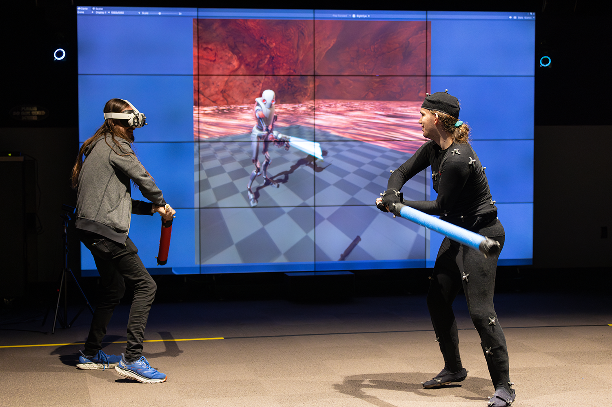
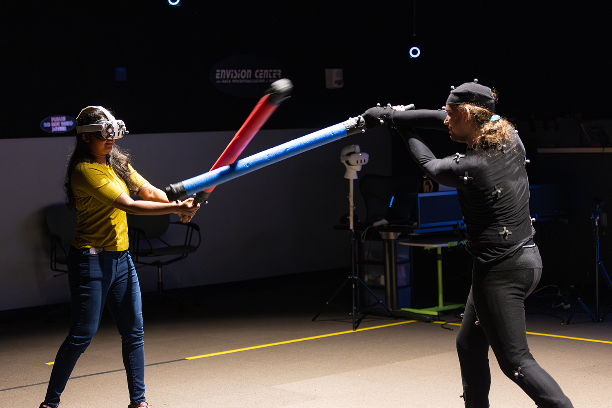
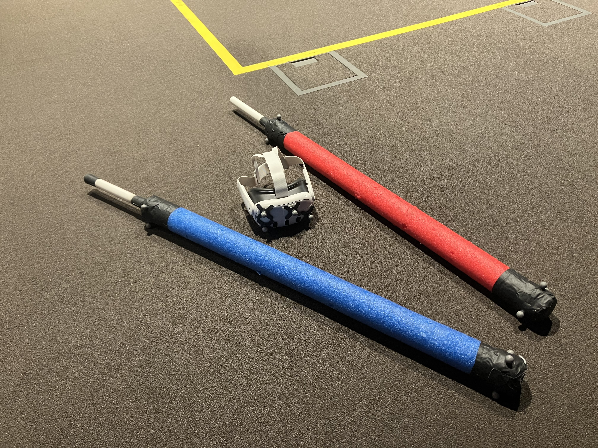
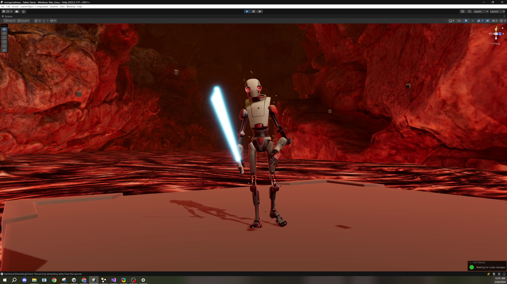

Mocap sabers
Beat up your friend with foam swords on an OptiTrack stage


Prototype game where motion captured players and swords drive VR visuals.
I work with some pretty awesome people. VR light saber battles at the @PurdueRCAC Envision Center 20th anniversary open house today 🤖 ⚔️
— Paul Branham (@BoilerPaulie) April 17, 2024
Best use of PVC pipe and pool noodles that I’ve ever seen, but the VR goggles and mocap suit obviously take it to a whole other level 👌🏼 pic.twitter.com/jqHgVm2TUJ
Tracking & calibration
OptiTrack's official plugin for Unity does not support 1:1 skeletal tracking or Android & Meta Quest. I couldn't use it for this.
I instead modified an old third-party plugin compatible with Android ➔ to support 1:1 skeletal tracking.
The markers on the headset are only for initial stage calibration. I still rely on Quest's native tracking.

I threw together several CC0 assets from PolyHaven.com ➔ and AmbientCG.com ➔ to create a placeholder lava planet environment. The robot model is a Unity standard asset ➔.
Thanks
Huge thanks to Hazel ➔ & Matthew ➔ for testing and helping buy pool noodles and PVC pipe.